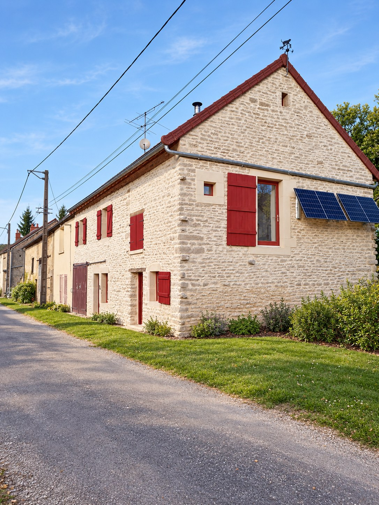
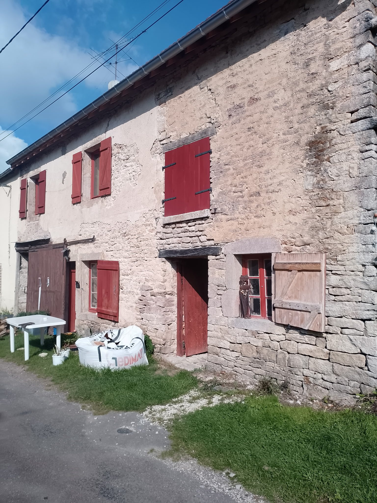
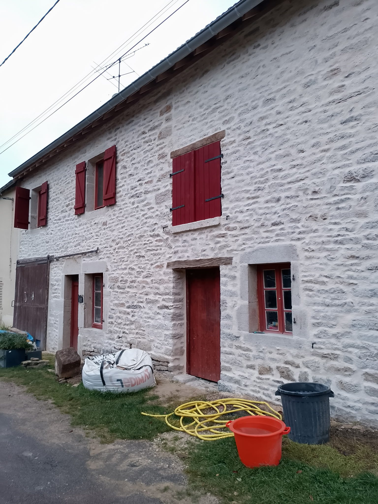
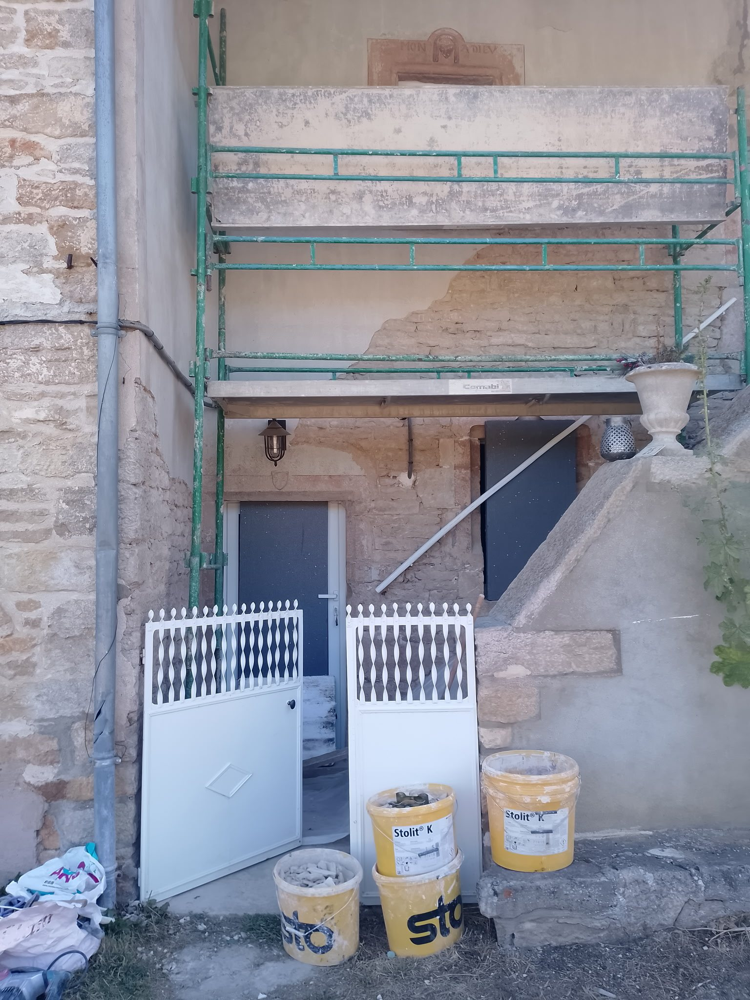
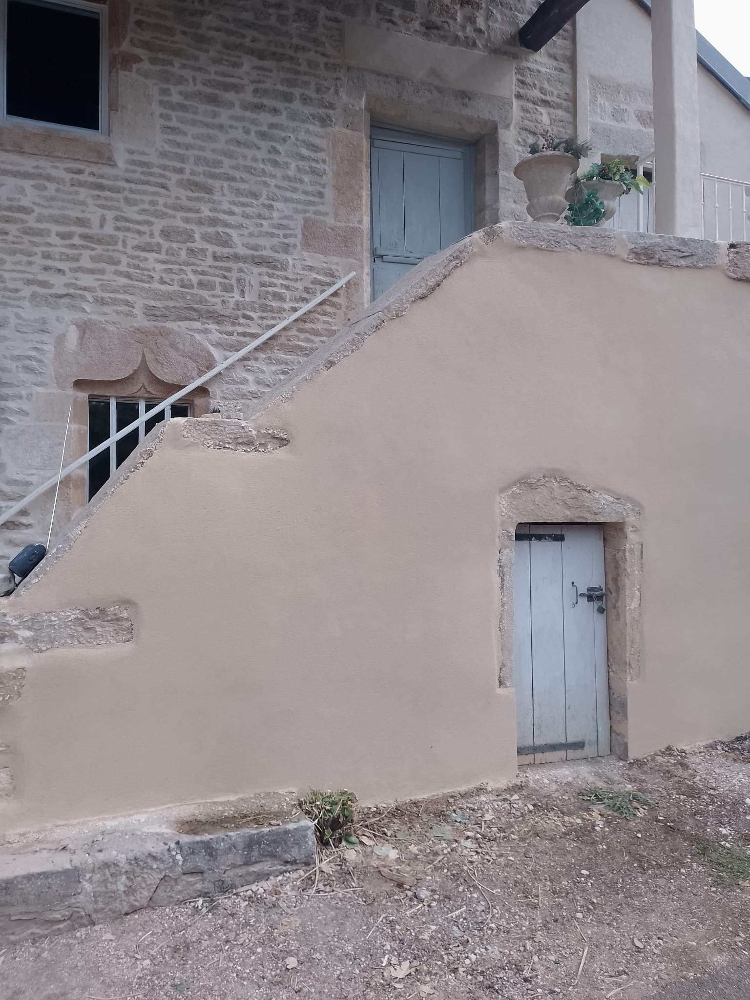
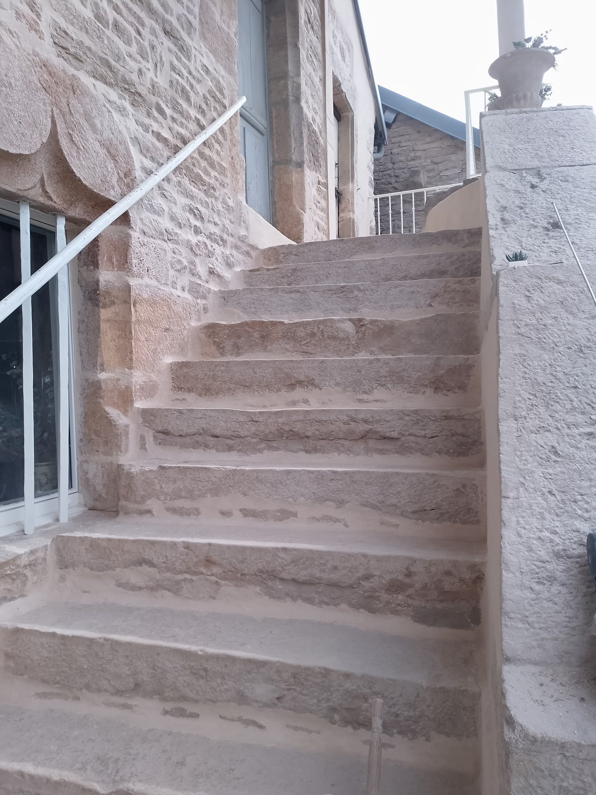
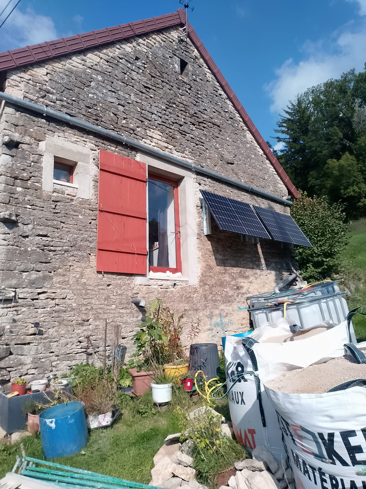
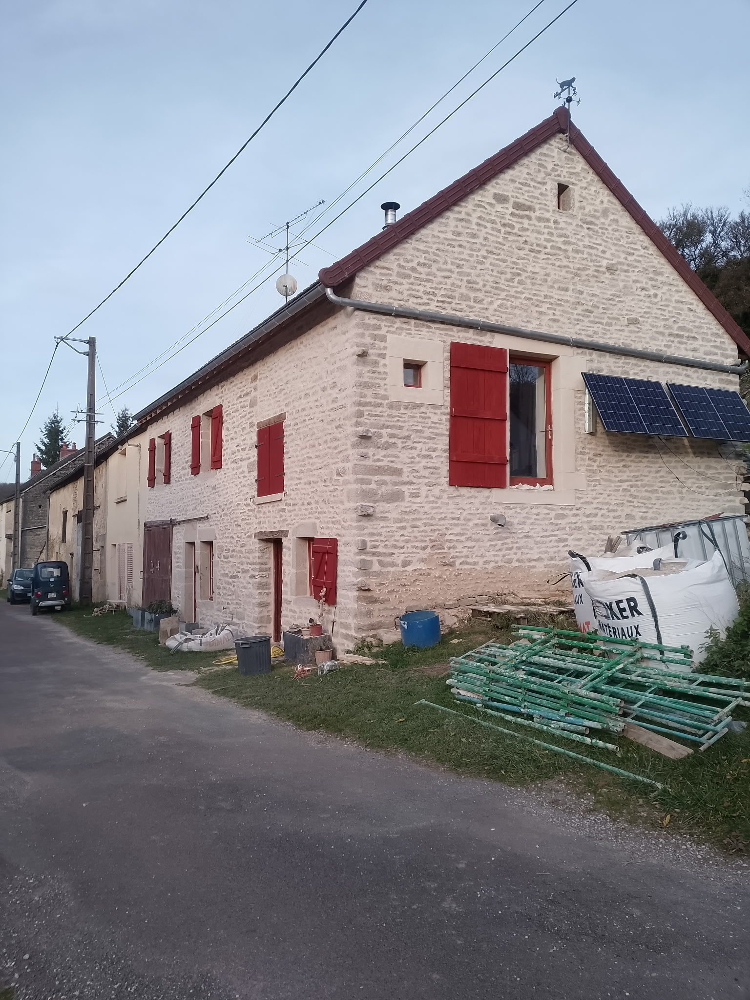

Façades en pierre
Nettoyage, préparation, reprise des supports et mise en valeur de la pierre existante.

Sombernon • 30 km autour • Depuis 2020
Rénovation de façades en pierre, jointoiement traditionnel à la chaux et finitions pour le bâti ancien.
Maison Renaissance
Maison Renaissance, façadier à Sombernon en Côte-d’Or, accompagne les propriétaires pour la rénovation de façades en pierre, la restauration de murs anciens et la mise en valeur du patrimoine bâti, tout en conservant l’identité de la maison.
Chaque chantier est abordé avec attention : piquage et préparation des supports, jointoiement ou rejointoiement traditionnel à la chaux, rénovation de murs en pierre, reprises d’enduits et finitions adaptées au bâti ancien.
Prestations
Une offre pensée pour la rénovation des murs, façades et intérieurs dans le respect des supports existants.
Nettoyage, préparation, reprise des supports et mise en valeur de la pierre existante.
Reprise des joints traditionnels pour protéger les murs et conserver une esthétique authentique.
Rebouchage, ratissage, entoilage et finitions harmonisées autour des éléments en pierre.
Préparation et peinture des murs et plafonds pour finaliser la rénovation.
Dépose des anciens revêtements et préparation des murs avant remise en état.
Débarras, nettoyage des sols et restitution d'un chantier propre.
Réalisations
Le book complet de nos réalisations sera prochainement mis en ligne.
Reprise de la façade et travail des joints pour retrouver une lecture plus nette de la pierre tout en gardant l'esprit du bâtiment.


Préparation du support, reprise de l'enduit et finition adaptée autour des pierres et ouvertures existantes.



Transformation d’une façade ancienne avec reprise des joints à la chaux pour protéger le support et redonner toute sa présence à la pierre.


Zone d'intervention
Maison Renaissance privilégie un périmètre local pour rester disponible et réactive. Pour savoir si votre commune est couverte, un appel suffit.
Voir la zone sur Google Maps ↗Façadier à Sombernon
Maison Renaissance intervient à Sombernon et dans un rayon d’environ 30 km pour la rénovation de façades en pierre, le jointoiement et le rejointoiement à la chaux, la restauration de murs en pierre, les reprises d’enduits, les finitions et l’entretien du bâti ancien.
Pour un devis, envoyez des photos de la façade et le nom de votre commune : cela permet un premier échange rapide sur l’état du support et les travaux à envisager.
Savoir-faire
Rénovation de façades anciennes, nettoyage et préparation des supports, reprise des murs et finitions adaptées aux maisons en pierre.
Reprise de joints de pierre à la chaux pour protéger les maçonneries anciennes, laisser respirer les murs et conserver un aspect traditionnel.
Restauration de murs en pierre, reprises localisées, enduits et finitions pour maisons anciennes, granges, dépendances et bâtiments de caractère.
Intervention autour de Sombernon, en Côte-d’Or, dans un rayon d’environ 30 km.
Contact
Envoyez quelques photos, précisez votre commune et décrivez brièvement votre besoin. Nous pourrons ainsi échanger rapidement sur votre projet.
José Santana • Maison Renaissance